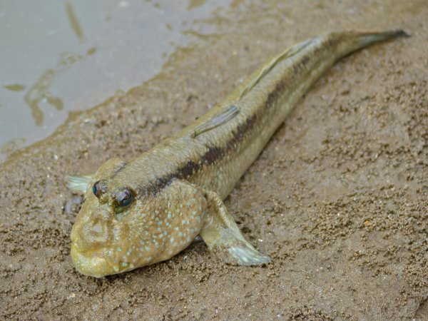

Min första sida.
Välkommen.

Vet inte vilken typ av fisk det är på bilden, ser sur ut dåke.

Den här firluren är en slamkrypare, eller mer känd som mudskipper. Över 30 olika arter har identifesirads att vara slamkrypare. Dim liver i afrika, Asien och Oceanein.